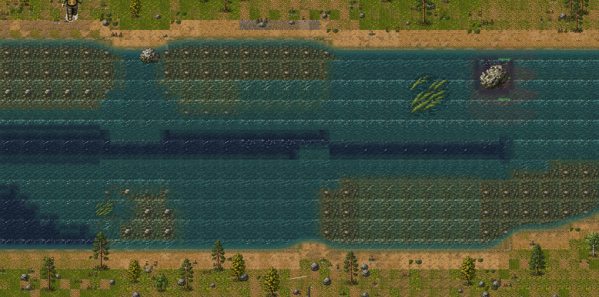

Fly Fishing Game
Playable Godot 4.3 fly-fishing prototype with procedural river ecology, hatch-driven fish behaviour, and authored SNES-style terrain modules

Current prototype: complete fishing loop with procedural river sections, sprite-driven angler and fish systems, and a custom renderer pulling water, shoreline, gravel, terrain, and prop art from checked-in module atlases.Overview
A 16-bit style fly-fishing game set on a Madison River-inspired side-scrolling river. This build has moved beyond a river generator demo into a playable proof of concept: configure a session, scout water, approach fish, manage your line, cast, mend, match the hatch, respond to takes, and log your catches.
The river simulation now models pool-riffle-run cycles, fords, pocket water, exposure, species-specific holding preferences, V-seam spawn offsets, boulder and rock eddies, and seeded section streaming. Fish behavior is driven by directional vision, intrusion memory, exposure-adjusted spook sensitivity, hatch state, fly matching, and hookset timing instead of a simple bite probability.
The latest work is the terrain-module rendering pass. The game
still treats procedural RiverData as the gameplay
source of truth, but the production RiverRenderer
now maps that data onto authored water, shoreline, gravel-bar,
terrain-fill, transition, and prop sprites instead of the
earlier continuous colour-field river style.
A normalized packed atlas and TileSet also live in the repo for
editor painting and TileMap experiments, but they are not the
active renderer path. RiverWorld still uses the
custom section renderer so procedural streaming, fish placement,
hold scores, and wading logic remain tied to the simulation
instead of a hand-painted map.
Stack
Current Status
- Playable PoC loop is implemented: session configuration, exploration, fish approach, casting, drift/mending, fly matching, hookset, catch confirmation, and logbook entries.
- Three difficulty tiers flow through the systems: fish counts, spook radius, blind spot size, strike windows, fly-matching strictness, and UI assistance.
- Procedural sections stream ahead of the player at 70% progress and despawn old sections while preserving section-relative fish state and angler context.
- The production renderer loads active water, shoreline, terrain-fill, gravel-bar, and decorative prop modules from the checked-in asset tree.
- Curated shallow-to-mid and mid-to-deep water transition tiles are wired into the chunk render pass, with directional depth blending kept as the fallback when an authored transition does not apply.
- Shoreline placement now validates 2x2 water footprints before drawing corners, prioritizing outer corners, inner corners, then straight edges to avoid obvious wrong-corner artifacts.
- The remaining terrain work is visual polish: bank material transitions, seam reduction, section-boundary continuity, and a visual smoke pass across bends, islands, gravel bars, and concave banks.
Challenges
- Making procedural rivers feel like fishable water instead of random noise: pool heads, pool bellies, tailouts, riffles, fords, pocket water, exposure, and current speed all have to influence where fish should hold.
-
Keeping the renderer and simulation decoupled.
RiverDataremains the source of truth for gameplay, while the current renderer maps that data onto authored terrain modules, runtime transition tiles, and sprite props. - Tuning fish behaviour so approach angle, water exposure, cover, time of day, fly rejection, line slap, and wading vibration all affect fish without creating contradictory spook rules.
- Building a casting loop that is readable without becoming a timing minigame detached from fishing: line length changes the rhythm, loop quality affects presentation, and mends affect drag during the drift.
- Integrating generated pixel-art terrain assets without introducing visual seams at water transitions, shoreline corners, bank material changes, or section boundaries.
- Maintaining two useful terrain paths without confusing their roles: the custom renderer is production, while the packed TileSet is a normalized comparison and prototyping asset.
Learnings
-
Centralising spook calculations in
SpookCalculatormade later additions, especially exposure-based sensitivity, much cheaper to integrate. - The river generator became much more convincing once it used explicit river anatomy templates. Noise is useful texture, but pool-riffle-run structure needs to be intentional.
- Separating generation from rendering paid off during the art transition: the same hold scores, fish placement, current map, and section streaming logic can survive renderer rewrites.
- Terrain tile work needs deterministic selection and validation rules before blending. Good module choice prevents many seams that would otherwise be hidden with expensive pixel blending.
- Shoreline tiles need geometry-aware placement, not just neighbor checks. The renderer now validates water-facing contact and quadrant fit before committing corner modules.
Key Systems
- RiverGenerator — deterministic pipeline: noise texture, pool-riffle-run template, ford injection, habitat classification, tile map, structures, eddies, pocket water, hold scoring, and annotated top holds
-
RiverRenderer — production renderer that maps
RiverDataonto authored terrain modules: land fills, water depth modules, shoreline edge/corner modules, gravel bars, runtime water transition tiles, and sprite-based props -
Terrain asset pipeline — checked-in
assets/terrain/modulesandassets/terrain/runtimepools feed the live renderer; the generated packed atlas and TileSet remain available for TileMap experiments and visual comparison - CastingController — state machine IDLE → FALSE_CASTING → PRESENTATION → RESULT → DRIFT, with line-length timing scaling and mouse mend detection
- SpookCalculator — all spook checks route here; formula accounts for fish size, cover, time of day, approach angle, difficulty, wading vibration, and habitat exposure
- FishAI — FEEDING → ALERT → SPOOKED → RELOCATING → HOLDING state machine driven by hold selection, feeding edges, SpookCalculator, and FlyMatcher rejection events
- HatchManager — time-of-day hatch state machine shifts fish feeding mode between emerger and dry fly windows; drives FlyMatcher best-match fly
- HooksetController + CatchLog — dry-fly rise and nymph indicator takes, strike-window timing, hard spooks, catch confirmation, fish snapshots, and logbook storage
-
DatabaseManager — autoload; opens
user://flyfishing.dbon startup, runs schema migrations, seeds difficulty presets; all persistence routes here - Section streaming — pre-generates next section at 70% through current; despawns two sections behind; seed chain derived from session seed + section index